Implementation Summary: In this assignment, I implemented a rasterizer capable of rendering SVG files. The complete graphics pipeline began with basic triangle rasterization and advancing to supersampling for antialiasing. The pipeline supports hierarchical transforms, barycentric coordinate interpolation for smooth color gradients, and texture mapping. For texture mapping, I implemented nearest and bilinear pixel sampling, as well as level sampling (mipmapping) to prevent aliasing at a distance.
Learnings: The most interesting part of this project was seeing how much of a difference small changes like taking the cross product or calculating partial derivatives improved image quality. I enjoyed toggling quickly through levels of supersampling and alternating between nearest and bilinear interpolation and seeing the render change.
Rasterizing the triangle involved implementing a point-in-triangle test using edge equations. Finding the min/max X and Y coordinates among the vertices defined the bounding box of the triangle, which I clamped to the edges of the screen to avoid out-of-bounds memory accesses. Then, iterating through each integer pixel coordinate within this bounding box, I calculate the center point at \((x + 0.5, y + 0.5)\) and evaluate the three edge functions (\(L_0, L_1, L_2\)) by taking the cross product of the edge vectors and the vertex vector to the sample point. If the sample point evaluates to \(\ge 0\) for all three edge functions ( ensuring counter-clockwise winding order), the center point is inside the triangle, and the pixel can be filled with the given color.
Algorithm Efficiency: My algorithm evaluates the exact bounding box of the triangle, meaning it is no worse than one that checks each sample within the bounding box. By calculating the floor of the minimum coordinate and the ceiling of the maximum coordinate, the nested for loops limit their bounds to the smallest possible grid containing the triangle.
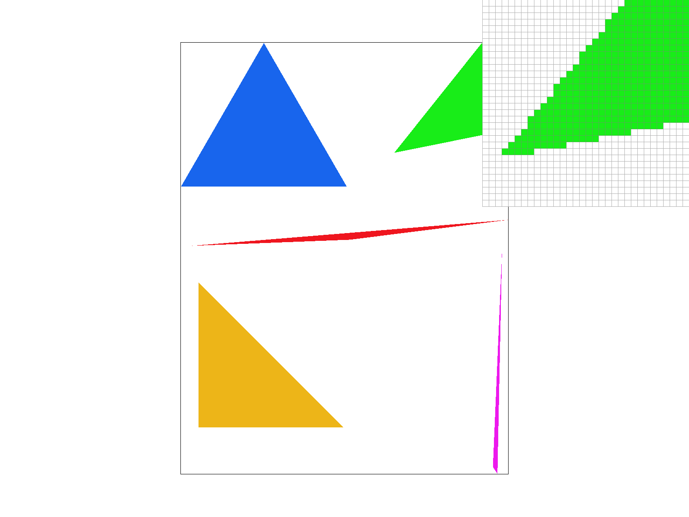
Algorithm and Data Structures: Supersampling is a spatial anti-aliasing technique used to reduce "jaggies" (aliased pixelated edges) as shown in the above image. Instead of taking one boolean sample at the center of a pixel, we sample the pixel at a higher frequency (e.g., 4 or 16 times per pixel) and average the results. To support this, I updated the sample_buffer data structure, dynamically resizing a 1D vector to hold width * height * sample_rate colors. This effectively acts as a high-resolution virtual framebuffer.
Pipeline Modifications: In rasterize_triangle, I added two inner loops to iterate sqrt(sample_rate) times across the X and Y axes of each pixel. I calculate the sub-pixel sample points and check the edge equations for each sub-pixel, storing the color in the expanded sample_buffer. Finally, in resolve_to_framebuffer, I iterate over the display pixels, fetch the sample_rate corresponding colors from the sample_buffer, and average them together before writing the final 8-bit RGB color to the target pixel.
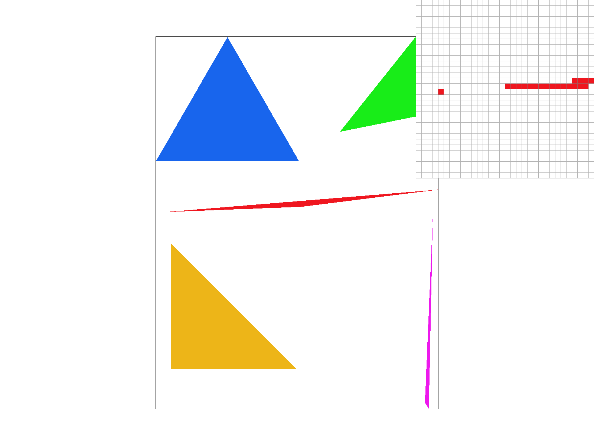
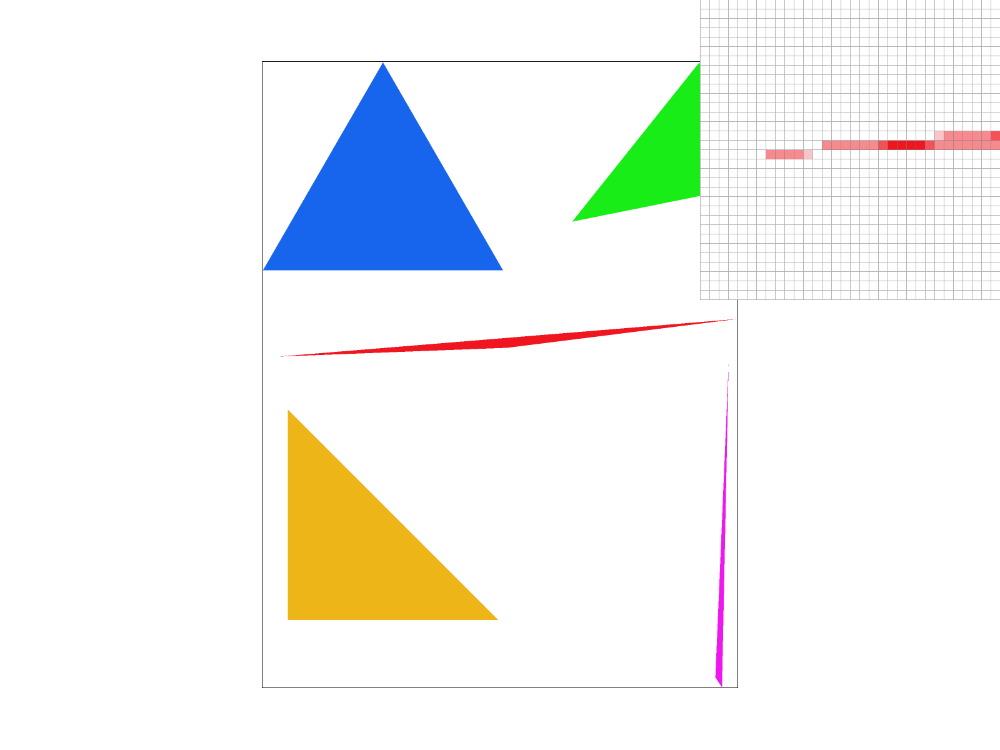
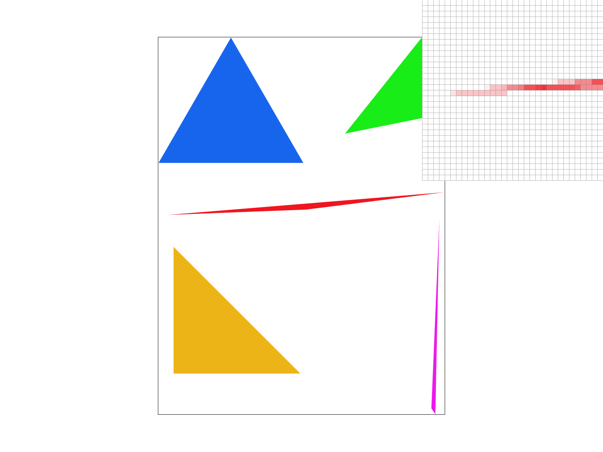
For the cubeman, I utilized the hierarchical transform structure to make the robot look like it is jumping into the air with its arms raised. I translated the leg polygons upwards to simulate jumping, and I applied rotation matrices to the arm groups to point them towards the sky. Additionally, I applied a global rotation transform to the entire SVG canvas to test the robustness of the transform hierarchy.
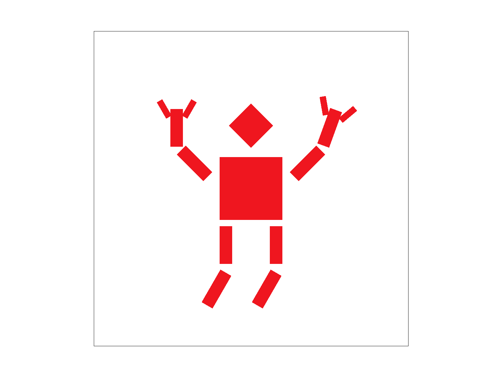
For the extra credit, I added a new GUI feature to allow viewport rotation. Pressing the [ and ] keys rotates the canvas by 5-degree increments. To track this, I introduced a view_rotation_deg variable to the DrawRend class.
I modified the matrix transformation stack inside DrawRend::redraw(). Originally, the pipeline mapped coordinates directly from SVG space to Normalized Device Coordinates (NDC), and then to screen space using the following matrix multiplication: ndc_to_screen * svg_to_ndc.
To apply a global viewport rotation, I constructed a 3x3 rotation matrix, based on the current angle, which I then multiplied in the middle of the transformation stack. The final transform becomes:
$$ \text{transform} = \text{ndc_to_screen} \times R \times \text{svg_to_ndc} $$By applying the rotation matrix after the SVG to NDC conversion, the entire SVG canvas and its drawn bounding box rotate within the normalized coordinate space before being scaled up to the final screen resolution.
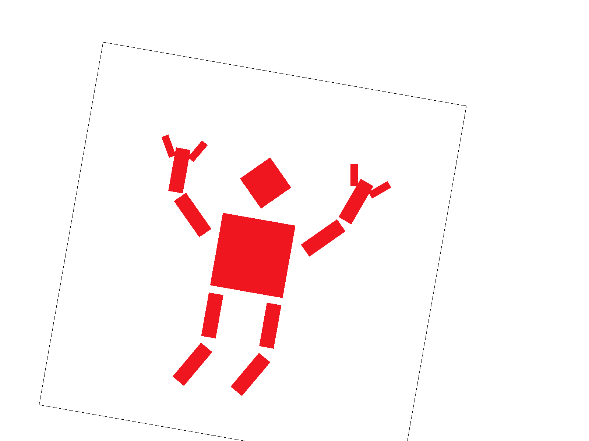
Barycentric coordinates (\(\alpha, \beta, \gamma\)) are a coordinate system for a triangle where any point inside the triangle can be expressed as a weighted sum of three vertices.
The equation is:
$$ V = \alpha V_0 + \beta V_1 + \gamma V_2 $$Where \(\alpha + \beta + \gamma = 1\). The closer a point is to a specific vertex, the higher that vertex's weight will be. Because these weights behave linearly across the surface of the triangle, they can be used to interpolate values assigned to the vertices.
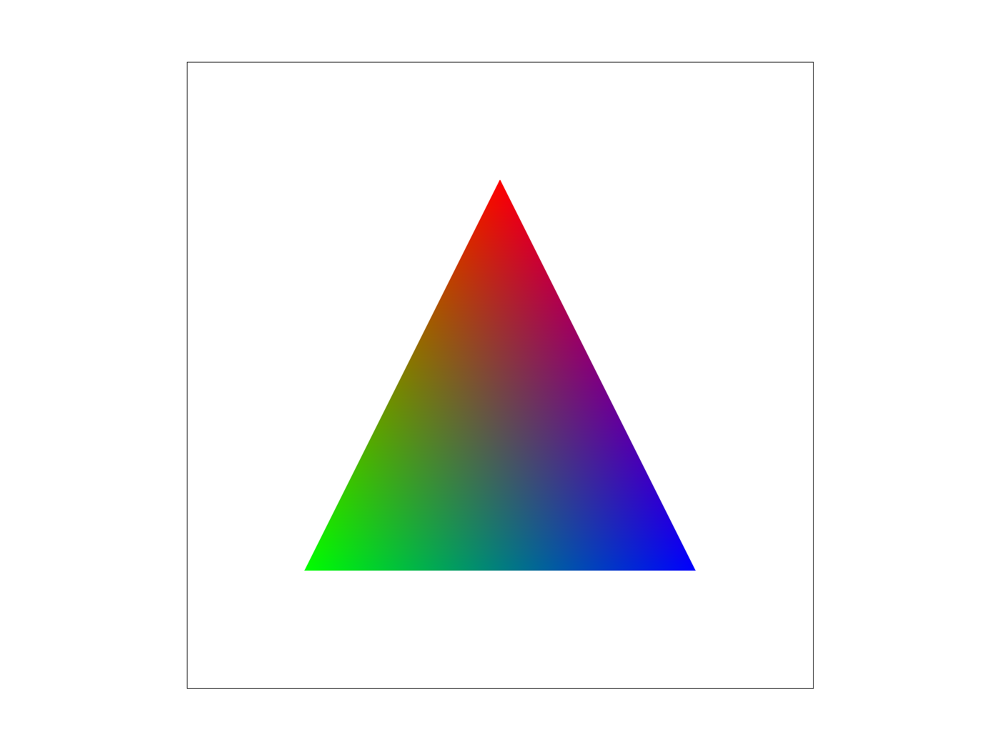
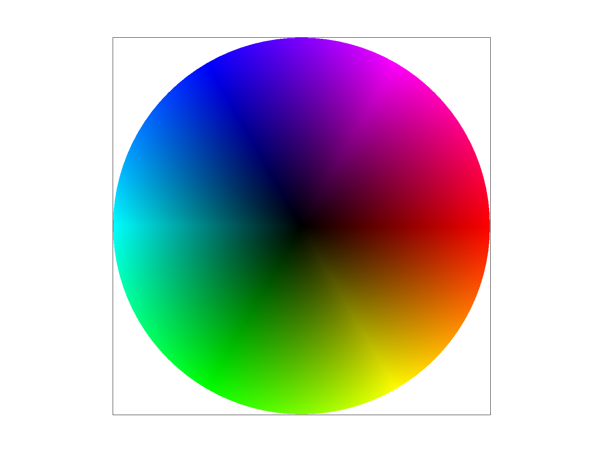
Pixel sampling determines how we assign a color from a texture image given a floating-point texture coordinate with coordinates (u, v). We have two rules in this project on how to pick:
|
|
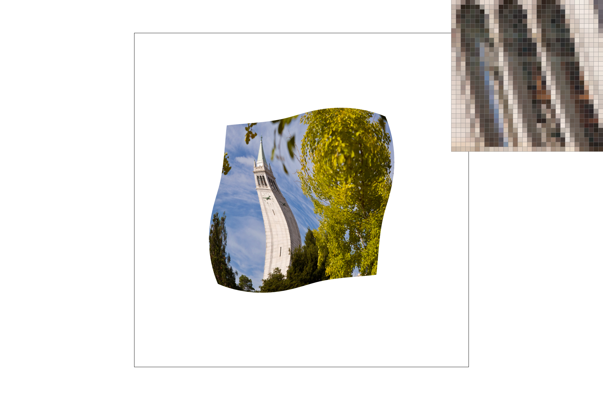 |
|
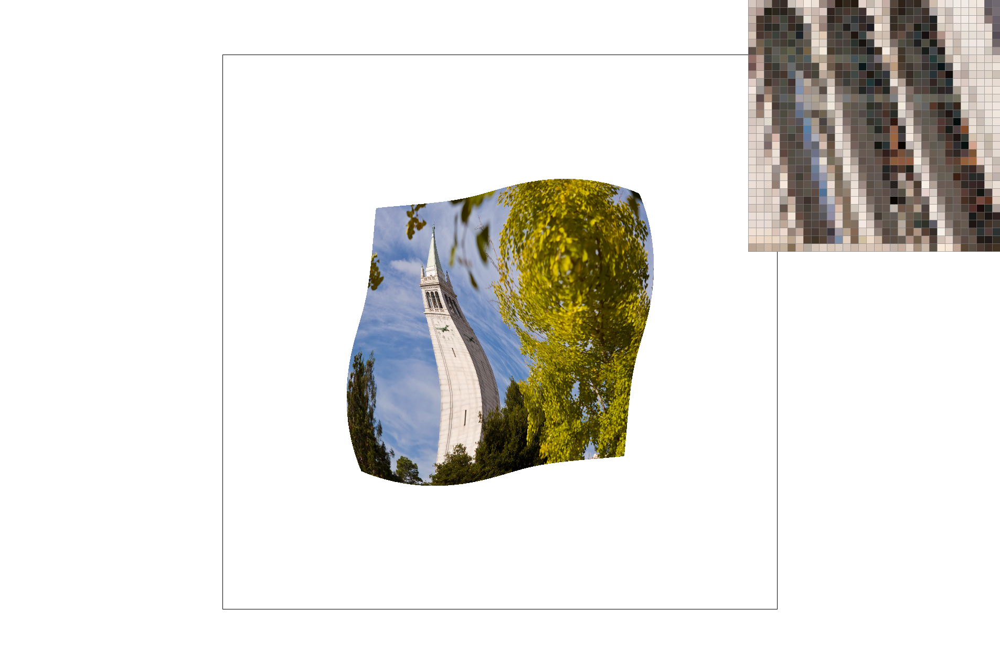 |
|
Relative Differences (./texmap/test6.svg): There is a large difference between the two methods under magnification. When zoomed in, nearest sampling will map multiple screen pixels to the exact same texel, creating harsh square blocks. Bilinear sampling prevents this by smoothing the transition between adjacent texels, leaving smooth gradients instead of blocks. Bilinear also smooths out high-frequency details that might stand out using nearest sampling.
Level sampling (mipmapping) is used to prevent aliasing artifacts when rendering high-resolution textures on small screen areas. When a texture is heavily minified, such as mapping a 1600x1600 texture onto a 5x5 pixel area, sampling from the full-res image causes severe Moire patterns and aliasing. Stepping exactly one pixel in screen space results in jumping across huge, distances in texture space, leaving artifacts
Mipmapping solves this by pre-computing a sequence of progressively lower-resolution versions of the texture. Selecting the appropriate mipmap level based on the object's distance and screen footprint ensures a smooth texture rendering.
Implementation: To implement level sampling, I calculated the required mipmap level (D) through the following steps:
rasterize_textured_triangle, I computed barycentric coordinates for the current pixel (x, y) alongside its right (x+1, y) and top (x, y+1) neighbors.get_level, these difference vectors were scaled by the texture dimensions to find the maximum rate of change, \(L\), across either axis:
\[ L = \max \left( \sqrt{ \left(\frac{du}{dx}\right)^2 + \left(\frac{dv}{dx}\right)^2 }, \sqrt{ \left(\frac{du}{dy}\right)^2 + \left(\frac{dv}{dy}\right)^2 } \right) \]
The continuous mipmap level was then evaluated as:
\[ D = \log_2(L) \]
L_ZERO), rounded to the nearest integer level (L_NEAREST), or linearly interpolated between the two adjacent integer levels (L_LINEAR, which combined with bilinear pixel sampling gives full trilinear filtering).Tradeoffs:
To demonstrate the difference level sampling makes, I mapped a high-resolution, high-frequency image of the Flatiron Building in NYC with dense windows. Because the image is distorted and minified into the center of the screen, it is susceptible to aliasing and Moire patterns.
|
|
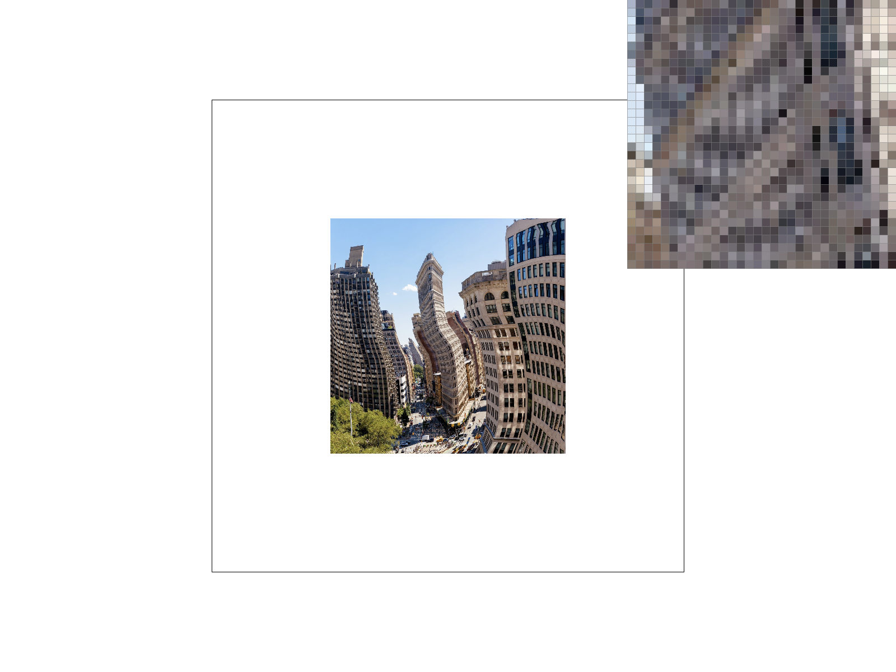 |
|
|
|